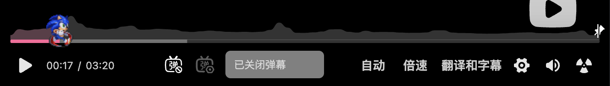
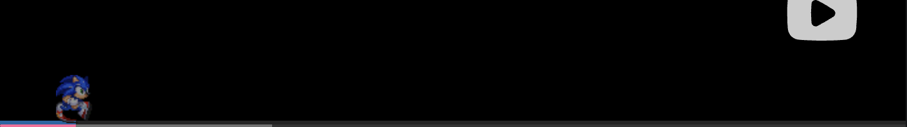
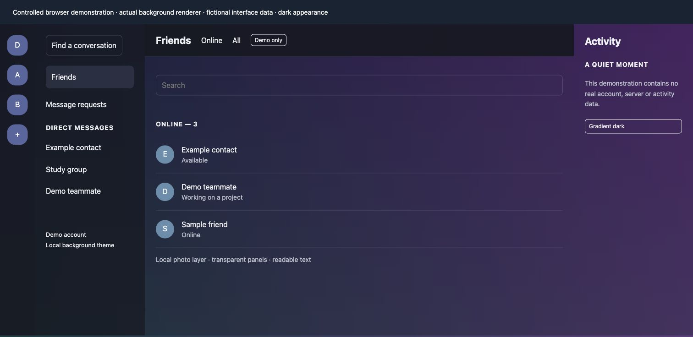
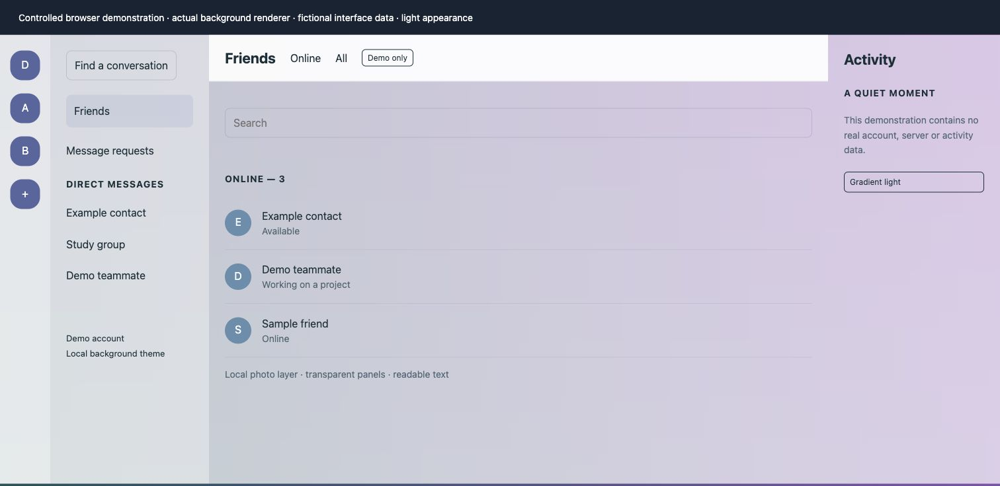

Script
Mini-projects for personal interfaces and small everyday customizations.
YouTube–Bilibili Drag Icon Script
A character follows the video progress track. The collection includes browser CSS for native YouTube and Bilibili seek handles, a Bilibili idle-progress userscript, and a macOS Bilibili GIF-character launcher. The browser styles are separate adapters; current live-player compatibility has not been verified.
Branch 1: source · Usage and supported targets




Discord Background Script
A macOS tool for importing local photos or validated theme packs, applying a temporary Discord background, and switching or restoring themes through a launcher. Includes theme validation, documentation, and automated tests.
Branch 2: source · Usage and restoration
The pictures below are controlled browser demonstrations of the actual background renderer, using a bundled gradient and fictional interface data.



